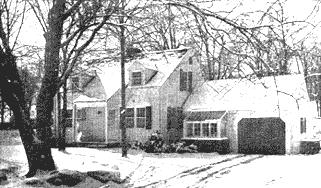

OUR HOMESTEAD: Another snapshot six months later showing how our suburban house has been turned into a homestead by adding a ""Harvest-Room."" The garage was remodeled -note the greenhouse window. Also, we - improved the front entrance and added picket fence at left